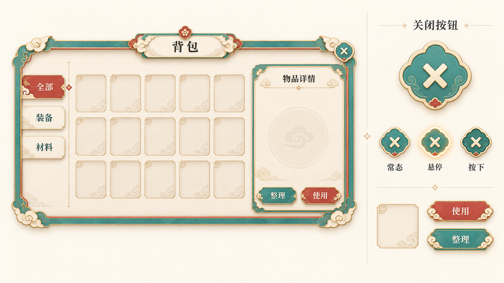
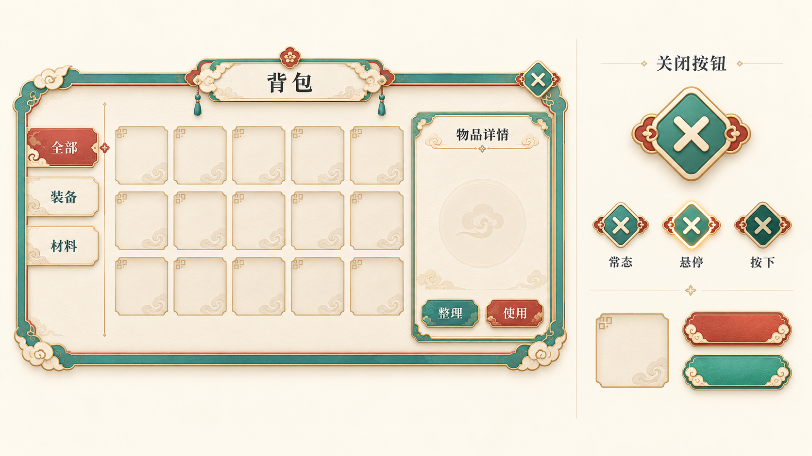
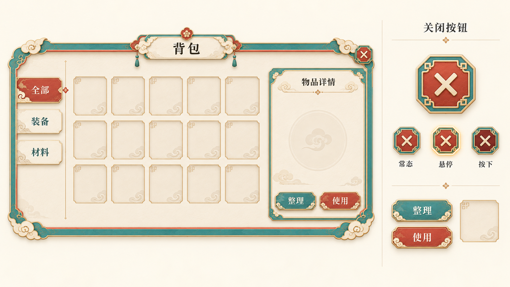

中国特色 · 关闭按钮与配套UI三版
已认可适度纹饰UI基线，新增按钮设计仍等待选择。中性底色，无场景背景；整体效果图未拆分为正式资源。
A · 云纹玉扣

关闭钮改为四瓣如意云形玉扣，奶白X占中部，侧边细云纹和小朱砂点；圆润风格与原UI协调。图中界面小按钮与放大版接近，悬停金边、按下深青仅作状态参考。
原件1672×941 · 设计基准1920×1080 · 关闭按钮建议48–64px，此板为放大效果参考
保存的原图B · 方胜结扣

关闭钮采用柔角菱形青玉面、两侧朱砂结扣和奶白X，轮廓区别明显。实际两侧结饰略像花瓣卷云，方胜几何表达成立但不是严格绳结示意；仍清楚可识别为关闭。
原件1672×941 · 设计基准1920×1080 · 关闭按钮建议48–64px，此板为放大效果参考
保存的原图C · 花窗折角

关闭钮为八角花窗折角，朱砂内面、青玉边和四角细回纹，奶白X清楚；几何轮廓更利落。内容区保持原基线，状态效果仍未拆成独立PNG。
原件1672×941 · 设计基准1920×1080 · 关闭按钮建议48–64px，此板为放大效果参考
保存的原图